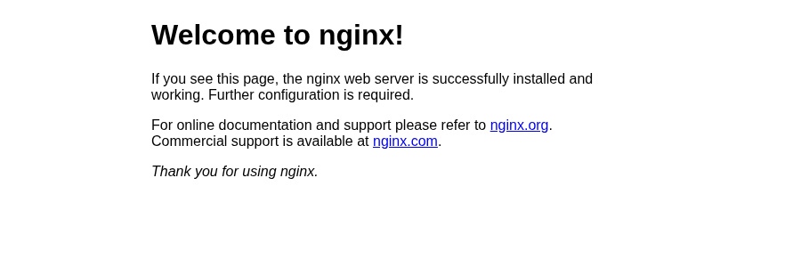
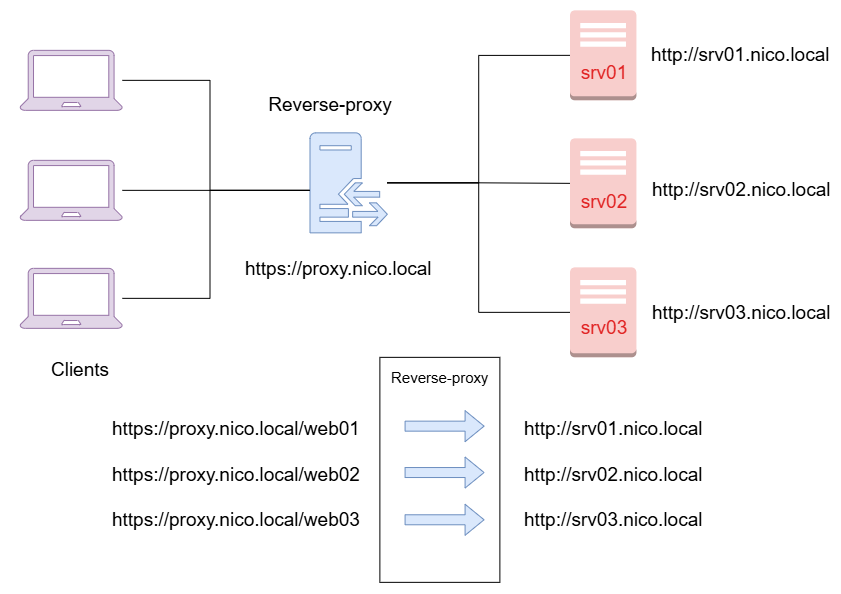
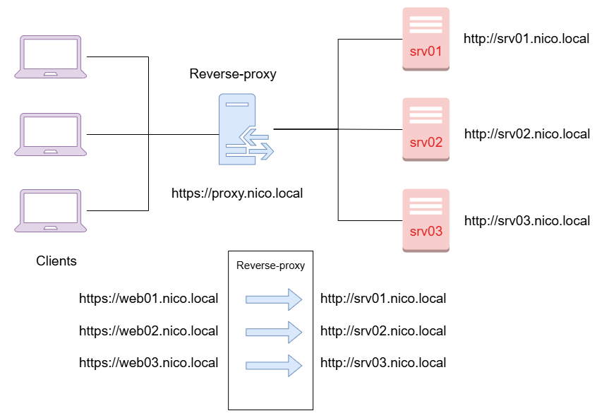
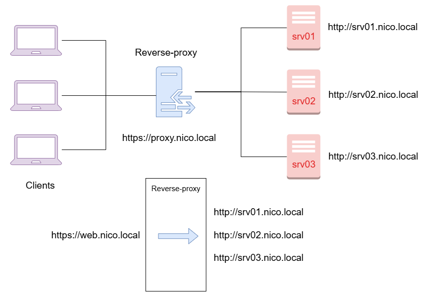
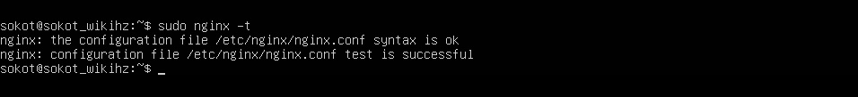

CS-01TP · BTS SIO 2e année · Réseau
Le reverse proxy reçoit toutes les requêtes des clients et les relaie au bon serveur interne. Le client ne voit que le proxy : il ne connaît ni l'adresse ni le nombre des serveurs derrière.
| Fonction | Ce qu'elle apporte |
|---|---|
| Terminaison TLS | Le proxy porte le certificat et déchiffre le HTTPS ; les serveurs internes peuvent rester en HTTP. |
| Routage | Par chemin (/web01) ou par nom de domaine (web01.…). |
| Répartition de charge | Round-robin (défaut), least_conn, ip_hash. |
| Masquage | Adresses et architecture internes invisibles depuis l'extérieur. |
| Cache, compression | Moins de charge sur les serveurs, pages plus rapides. |
| Machine | Rôle | Nom DNS |
|---|---|---|
| RP | Nginx, reverse proxy | rp.sio.local |
| WEB01 | Apache, page « Server 1 » (fond bleu) | srv-web01.sio.local |
| WEB02 | Apache, page « Server 2 » (fond rouge) | srv-web02.sio.local |
Les serveurs web peuvent être des VM ou des conteneurs LXC Debian 13 sous Proxmox.
Sur WEB01 et WEB02 :
apt update && apt install -y apache2 unzip
cd /var/www/html
unzip /root/tp-contenu.zip # index1.html et index2.html
mv index1.html index.html # sur WEB01 (index2.html sur WEB02)
systemctl enable --now apache2Vérifier depuis le proxy : curl http://srv-web01.sio.local renvoie « Server 1 », et WEB02 « Server 2 ».
apt update && apt install -y nginx
systemctl enable --now nginxDepuis un poste client, ouvrir http://rp.sio.local : la page par défaut s'affiche.

La configuration est lue dans /etc/nginx/nginx.conf, puis dans conf.d/* et sites-enabled/*.
Comme dans le cours, on garde une copie de l'original et on écrit toute la configuration dans nginx.conf :
cp /etc/nginx/nginx.conf /etc/nginx/nginx.bck
rm /etc/nginx/sites-enabled/defaultUn seul certificat couvre tous les noms publiés par le proxy grâce aux noms alternatifs (SAN).
Le joker *.rp.sio.local couvre web01, web02 et web.
mkdir -p /etc/ssl/certs/rp /etc/ssl/private/rp
cd /etc/ssl/private/rp
openssl req -new -newkey rsa:2048 -nodes -keyout rp.key -out rp.csr \
-subj "/CN=rp.sio.local" \
-addext "subjectAltName=DNS:rp.sio.local,DNS:*.rp.sio.local"
chmod 600 rp.keyrp.csr par l'autorité interne (AD CS : https://<serveur-ca>/certsrv →
Demander un certificat → demande avancée → coller le CSR → modèle Serveur Web)./etc/ssl/certs/rp/rp.crt.openssl x509 -in /etc/ssl/certs/rp/rp.crt -noout -ext subjectAltName.Les postes clients doivent faire confiance à l'autorité (certificat racine déployé par GPO dans un domaine AD), sinon le navigateur affichera une alerte.
Tous les noms publiés doivent pointer vers le proxy, pas vers les serveurs web. Sur le DNS Windows :
Add-DnsServerResourceRecordA -ZoneName sio.local -Name rp -IPv4Address 192.168.10.20
foreach ($n in "web01.rp","web02.rp","web.rp") {
Add-DnsServerResourceRecordCName -ZoneName sio.local -Name $n -HostNameAlias rp.sio.local
}Les quatre exercices du TP tiennent dans un seul fichier /etc/nginx/nginx.conf.
Directives utiles : server (site virtuel), server_name (nom auquel il répond),
location (traitement d'une URL), proxy_pass (serveur à qui remettre la requête),
proxy_set_header (en-têtes transmis), upstream (groupe de serveurs).
user www-data;
worker_processes auto;
pid /run/nginx.pid;
error_log /var/log/nginx/error.log;
include /etc/nginx/modules-enabled/*.conf;
events { worker_connections 768; }
http {
include /etc/nginx/mime.types;
access_log /var/log/nginx/access.log;
# en-têtes transmis aux serveurs internes
proxy_set_header Host $host;
proxy_set_header X-Real-IP $remote_addr;
proxy_set_header X-Forwarded-For $proxy_add_x_forwarded_for;
proxy_set_header X-Forwarded-Proto $scheme;
# certificat commun à tous les sites
ssl_certificate /etc/ssl/certs/rp/rp.crt;
ssl_certificate_key /etc/ssl/private/rp/rp.key;
ssl_protocols TLSv1.2 TLSv1.3;
# redirection HTTP → HTTPS
server {
listen 80 default_server;
return 301 https://$host$request_uri;
}
# ... blocs des exercices a) à d) ci-dessous ...
}
server {
listen 443 ssl;
server_name rp.sio.local;
location / { # a) page servie par Nginx lui-même
root /usr/share/nginx/html;
index index.html index.htm;
}
location /web01/ { # b) https://rp.sio.local/web01/
proxy_pass http://srv-web01.sio.local/;
}
location /web02/ {
proxy_pass http://srv-web02.sio.local/;
}
}Le / final de proxy_pass compte : il remplace le préfixe /web01/ par /.
Sans lui, Apache recevrait /web01/ et répondrait 404.

server par nom publié (schéma du cours). server {
listen 443 ssl;
server_name web01.rp.sio.local;
location / { proxy_pass http://srv-web01.sio.local/; }
}
server {
listen 443 ssl;
server_name web02.rp.sio.local;
location / { proxy_pass http://srv-web02.sio.local/; }
}
upstream ferme_web {
# least_conn; # décommenter : serveur le moins chargé
server srv-web01.sio.local:80;
server srv-web02.sio.local:80;
}
server {
listen 443 ssl;
server_name web.rp.sio.local;
location / { proxy_pass http://ferme_web/; }
}nginx -t # contrôle de syntaxe, toujours avant le redémarrage
systemctl restart nginx
| Test | Résultat attendu |
|---|---|
https://rp.sio.local | Page Nginx, cadenas valide. |
http://rp.sio.local | Redirigé en HTTPS. |
https://rp.sio.local/web01/ | « Server 1 » sur fond bleu. |
https://rp.sio.local/web02/ | « Server 2 » sur fond rouge. |
https://web01.rp.sio.local | « Server 1 ». |
https://web02.rp.sio.local | « Server 2 ». |
https://web.rp.sio.local puis F5 | Alternance « Server 1 » / « Server 2 », l'URL ne change pas. |
En ligne de commande depuis un client :
for i in 1 2 3 4; do curl -s --cacert ca.crt https://web.rp.sio.local | grep -o 'Server [12]'; doneCôté Apache, tail /var/log/apache2/access.log montre que toutes les requêtes viennent de l'IP du proxy.
| Symptôme | Piste |
|---|---|
| 502 Bad Gateway | Le serveur interne ne répond pas : curl http://srv-web01.sio.local depuis le proxy, Apache démarré ? |
404 sur /web01 | / final oublié sur proxy_pass, ou appel de /web01 sans / final. |
| Mauvais site affiché | Le nom ne pointe pas vers le proxy, ou server_name mal écrit : Nginx sert le premier bloc. |
| Alerte de certificat | Nom absent du SAN, ou autorité non approuvée par le poste. |
| Nginx ne redémarre pas | nginx -t, puis journalctl -u nginx et /var/log/nginx/error.log. |
Schémas : support de cours BTS SIO (domaine d'exemple nico.local). Capture nginx -t : Wikimedia Commons (CC BY-SA 4.0).
Référence : documentation Nginx, module ngx_http_proxy_module et ngx_http_upstream_module.